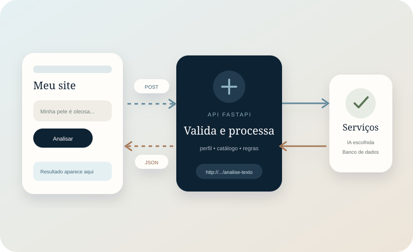
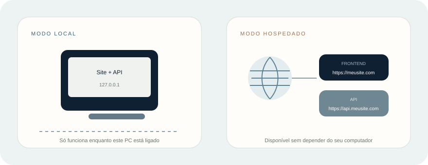
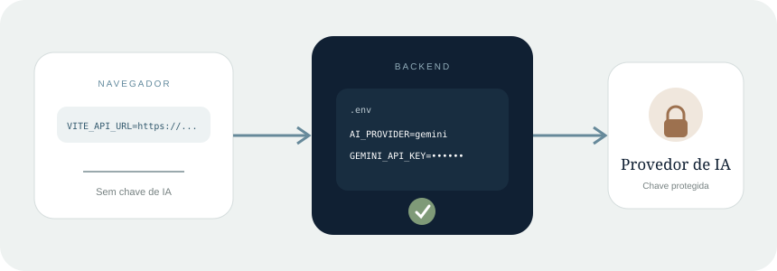

Frontend
É o que a pessoa vê. Contém botões, formulários e a variável com o endereço público da API. Não contém chave de IA.
Você não precisa usar o site Lumina. Qualquer interface capaz de enviar uma requisição HTTP pode pedir uma análise e exibir a resposta.

Quatro palavras bastam para entender a comunicação.
http://127.0.0.1:8000./analise-texto.perfil.tipo_pele e recomendacoes para criar títulos, cartões e mensagens.É o que a pessoa vê. Contém botões, formulários e a variável com o endereço público da API. Não contém chave de IA.
Valida os dados, protege as chaves, chama o provedor de IA, consulta os produtos e monta a resposta.
O código do botão é quase igual. O que muda é o endereço.

127.0.0.1 sempre significa “este computador”. Um endereço público HTTPS aponta para o servidor hospedado.Use enquanto desenvolve. Inicie o backend com uvicorn main:app --reload. O endereço será:
const API_URL = 'http://127.0.0.1:8000';Somente aplicações no mesmo computador conseguem usar esse endereço. Se você enviar o seu HTML para outra pessoa, o navegador dela procurará a API no computador dela.
Use um domínio HTTPS do backend. A demonstração pública atual usa:
const API_URL = 'https://api-production-f6fd.up.railway.app';Para um projeto real, substitua pelo endereço da sua própria hospedagem, banco e catálogo.
Seu frontend conhece o endereço da API; somente o backend conhece a chave do provedor.

No arquivo .env do backend, defina AI_PROVIDER e preencha somente a chave escolhida. Os modelos abaixo são os padrões incluídos no projeto:
AI_PROVIDER=gemini
GEMINI_API_KEY=sua_chave_aqui
GEMINI_MODEL=gemini-3.5-flash-liteAI_PROVIDER=openai
OPENAI_API_KEY=sua_chave_aqui
OPENAI_MODEL=gpt-5.6-lunaAI_PROVIDER=anthropic
ANTHROPIC_API_KEY=sua_chave_aqui
ANTHROPIC_MODEL=claude-haiku-4-5-20251001A v3.9.0 preservada utiliza a configuração Gemini. O suporte multiprovedor completo faz parte da Versão X. Em qualquer edição, o perfil manual e as recomendações já conhecidas funcionam sem chave; foto e texto dependem do provedor ativo.
CORS é a lista de sites que podem chamar a API pelo navegador. Para o exemplo deste pacote, servido na porta 5500:
CORS_ORIGINS=http://localhost:5500Em produção, use o domínio real, sem barra final:
CORS_ORIGINS=https://www.seusite.com.br* por comodidade em uma aplicação real. Autorize apenas as origens necessárias e reinicie o backend depois de alterar o .env.Começaremos pelo perfil manual, porque ele testa a integração sem depender da IA.
<button id="recomendar">Ver recomendações</button>
<section id="resultado" aria-live="polite"></section>
<script src="app.js"></script>const API_URL = 'http://127.0.0.1:8000';
document.querySelector('#recomendar').addEventListener('click', async () => {
const resposta = await fetch(`${API_URL}/recomendacoes`, {
method: 'POST',
headers: { 'Content-Type': 'application/json' },
body: JSON.stringify({
tipo_pele: 'oleosa',
sensivel: true,
tem_espinha: true
})
});
const dados = await resposta.json();
document.querySelector('#resultado').textContent =
`Foram encontrados ${dados.total_recomendacoes} produtos.`;
});POSTIndica que você está enviando dados para processamento. Não é o mesmo que simplesmente abrir um endereço.
JSON.stringifyTransforma o objeto JavaScript no formato de texto que a API espera no corpo da requisição.
resposta.ok, trate erros e desabilite o botão enquanto aguarda. O projeto funcional incluído neste pacote já demonstra essas proteções.Texto e perfil usam JSON. Foto usa FormData, próprio para arquivos.
| Objetivo | Rota | Formato enviado | Usa IA? |
|---|---|---|---|
| Perfil conhecido | POST /recomendacoes | JSON com tipo, sensibilidade e espinhas | Não |
| Descrição livre | POST /analise-texto | JSON com texto | Sim |
| Fotografia | POST /analise-foto | FormData com arquivo e texto opcional | Sim |
| Catálogo | GET /produtos | Nenhum corpo | Não |
const resposta = await fetch(`${API_URL}/analise-texto`, {
method: 'POST',
headers: { 'Content-Type': 'application/json' },
body: JSON.stringify({
texto: 'Minha pele fica oleosa ao longo do dia e tenho espinhas frequentes.'
})
});
const dados = await resposta.json();<input id="foto" type="file" accept="image/jpeg,image/png,image/webp">
const formulario = new FormData();
formulario.append('arquivo', document.querySelector('#foto').files[0]);
formulario.append('texto', 'Minha testa costuma ficar oleosa.'); // opcional
const resposta = await fetch(`${API_URL}/analise-foto`, {
method: 'POST',
body: formulario
});
const dados = await resposta.json();Content-Type ao enviar FormData. O navegador precisa criar sozinho o separador do arquivo. A foto deve ser JPG, PNG ou WEBP, até 5 MB.| Estado | O que sua interface deve fazer |
|---|---|
sucesso ou resposta com recomendações | Mostrar perfil e produtos, agrupados por categoria. |
informacoes_insuficientes | Pedir uma descrição melhor ou uma foto mais ampla. |
fora_escopo | Explicar que a ferramenta analisa apenas pele humana em contexto cosmético. |
imagem_inadequada | Mostrar a orientação recebida e manter a opção de escolher outra foto. |
confirmacao_necessaria | Pedir ao usuário que confirme o tipo; depois chamar /recomendacoes, sem enviar a foto novamente. |
Nunca apresente a análise como diagnóstico. Foto e texto são entradas opcionais e independentes; a experiência do seu frontend decide qual destacar.
O pacote contém uma página pequena com perfil manual, texto, foto e resposta visual.
.venv\Scripts\activate
uvicorn main:app --reloadpython -m http.server 5500Depois, abra http://localhost:5500. O exemplo começa usando http://127.0.0.1:8000, mas há um campo para trocar o endereço.
Hospedar o frontend e hospedar a API são duas tarefas separadas.
Envie o repositório para um serviço compatível com Python/FastAPI. O processo inicia normalmente com uvicorn main:app --host 0.0.0.0 --port %PORT% ou com o comando definido pelo provedor.
Cadastre AI_PROVIDER, a chave do provedor ativo, o modelo, APP_ENV=production, o caminho persistente do banco e CORS_ORIGINS. Não envie o seu .env
O SQLite e as imagens não podem ficar apenas no disco temporário do deploy. Configure volume persistente; para tráfego maior, considere banco de servidor e armazenamento de objetos.
Troque API_URL pelo domínio HTTPS publicado. Em Vite, use VITE_API_URL; em HTML simples, altere a constante ou o campo de configuração do exemplo.
Abra em aba anônima e em outro celular. Teste /status, perfil manual, texto e foto. Observe o console do navegador e os logs do backend se algo falhar.
APP_ENV=production. Não as exponha simplesmente para colocar o painel na internet; primeiro implemente autenticação e autorização.A melhor opção depende de quem precisa acessar.
| Cenário | Facilidades | Dificuldades | Quando escolher |
|---|---|---|---|
| API local | Grátis, dados no PC, logs fáceis, mudanças imediatas. | PC e terminal precisam ficar ligados; não serve visitantes externos; endereço muda em rede. | Aprendizado, desenvolvimento, painel local e testes. |
| API hospedada gratuita | Link público, demonstração acessível de qualquer lugar, deploy simples. | Pode dormir, ficar lenta, limitar uso e exigir volume persistente. | Portfólio, TCC e demonstrações moderadas. |
| API hospedada paga | Mais estabilidade, recursos, métricas e capacidade. | Custo, configuração e responsabilidade operacional. | Uso real, tráfego previsível e compromisso de disponibilidade. |
Descubra se a falha está no navegador, na API ou no provedor de IA.
API_URL/status diretamente. Se não responder, a API está desligada ou o endereço está errado. Se responder, confira CORS, HTTPS e o console do navegador.CORS_ORIGINS. Protocolo, domínio e porta fazem parte da origem: http://localhost:5500 é diferente de http://localhost:5173.detail da resposta. Texto exige ao menos 10 caracteres úteis; nomes de campos e tipos precisam estar corretos.127.0.0.1, que a API usa HTTPS, que CORS contém o domínio publicado e que as variáveis foram definidas no serviço de hospedagem.Você terminou quando consegue responder “sim” a estes itens.